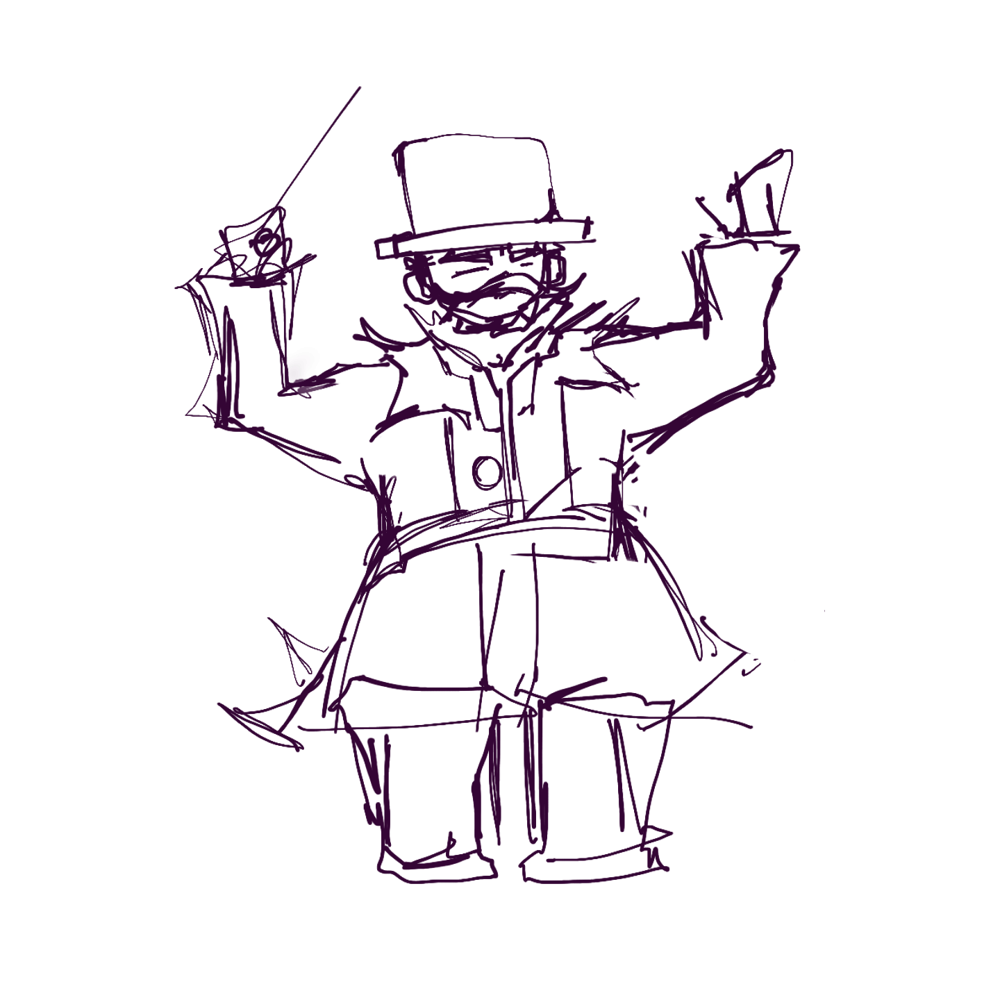
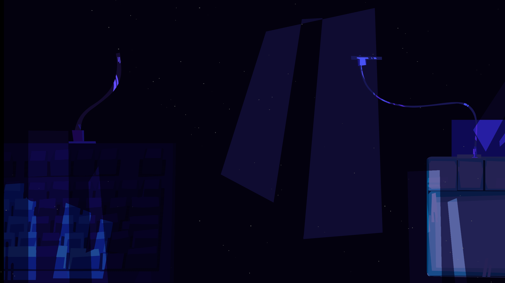
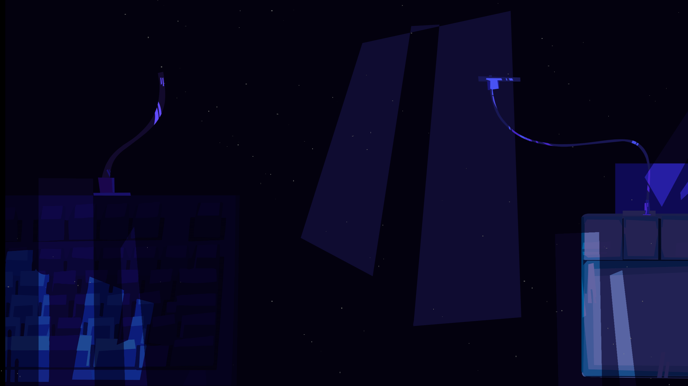

A TYPICAL DAY...
Stephanie and Mike live in Chicago with their parents who both work corporate jobs. They visit their
grandmother in a small suburban outskirt town in Illinois called Green Pines. This quaint town does not have
the same hustle and bustle as the city so Stephanie and Mike often get very bored visiting.
Inside
Grandma’s house is a treasure trove of antiques. An old record player softly plays an old tune that they
can’t quite make out. Grandma, full of warmth, sends them to the attic to fetch decorations. She warns them
to not dilly dally as there are many antiquities that could break. The children supposedly head this
warning. In the attic, amidst dusty trunks and heirlooms, the siblings discover a carved wooden cabinet.
Inside lies a glowing, crystalized medallion with intricate musical engravings. Along with old sheet music a
plethora of instruments and what appears to be a broken guitar. Curious, they accidentally shatter the
medallion while gesturing with it as if it is as magical artifact. The room plunges into darkness, and the
record player’s song warps into a haunting melody.
The player is first introduced to the Rhythmscape through another music player artifact, this time a stereo
cd player. The seemingly mundane action of putting on some music suddenly glitches the entire world into
multi-color and the player is suddenly thrust into the Rhythmscape. The player can only continue forward at
this point and complete the journey into the Rhythmscape to fight the battles against Tone Death.
Below
are some of the animation key-frames for the introduction sequence.
STEPHANIE
GUITAR CHARACTER
HOW IS A CHARACTER CREATED
Stephanie ‘s character traits or identifiers are brave, occasionally rash/impetuous, strong, protective,
humorous/fun but can also be more serious, and disinterested. Those traits are then imbued into the poses,
clothing, and coloring choices for Stephanie’s character design. She is seen as relatively aloof but also
worried and judgmental in some frames.
The process typically begins with a red line gesture sketch where
the overall body proportions are established as well as the pose. A black line sketch is superimposed on top
where the clothing and styling of the character is created. That black line character sketch is the basis for
the final outline.
In our game, the two main characters are essentially cheerleaders off to the sides of the screen, dancing and moving to the beat. This was achieved through frame by frame animations where both characters have the most movement occurring on the fourth frame. When pairing this with the music in game, the bpm of the song/60 = the number of beats per second, which then becomes the number of frames per second that the animation plays at.
MIKE
STOMP CHARACTER
On the other hand, the stomp player, Mike (Stephanie’s younger brother) has more timid character traits
and identifiers such as: curiousness, nervousness, a more timid nature, cleverness, and being witty (at
least when interacting with his sister).
The two characters needed to have distinct colorings
but also be similar enough to make it clear that they are siblings. Mike is also decently younger than
Stephanie and that needed to be visible in the body proportions as well.
The shadowy figure of
TONE DEATH
emerges, a being of living silence and discord. The siblings notice that as he nears the record player, the
melody becomes more and more muted, eventually converting into the static hum of grey noise. Looming over
Stephanie and Mike, he announces his plan to erase each genre of music from existence, leaving the current
world in darkness and silence. He begins by scattering the medallion shards across time to disrupt the flow
of musical history.
Before vanishing, Tone Death warns them that their world will soon fall into
silence and chaos. He lunges at the children violently but the guitar from the cabinet flies over and emits
a strong red light. Tone Death winces as the light hits him and vanishes as quickly as he awakened. As he
disappears, one shard of the medallion remains hidden in Mikes pocket. Stephanie decides to hold onto the
guitar, setting the strap about her shoulders, and they make their way downstairs.
As the kids rush
downstairs to warn their Grandma and parents about the shrouded figure they encountered, they hear the keys
of a piano playing from their neighbors house. Suddenly the shard in Mike’s pocket begins to grow unbearably
warm. Mike reaches into his pocket throws the shard against the ground, where it grows into a glowing
portal, sweeping the siblings into a whirlwind of light. Their vision turns orange, and Stephanie can only
think to hold onto her brother and the guitar with all her strength.
You and a friend are transported back to 1999 in this two-player arcade rhythm game. One of you will dodge attacks and keep the rhythm by stomping on a dance board, while the other defends from musical mishaps while waving a motion-detected ir guitar. Together you will fight through various musical genres to defeat the evil Tone Death and free the world from eternal silence. With every successful completion of a level Stephanie and Mike’s Walkman gains new power, leading them to a final showdown in their hometown Chicago to save the world from Tone Death’s mission.
OUR ULTIMATE VILLAIN
LEVEL 1 VILLAIN
The hooded figure Tone Death is the ultimate villain in the Rhythmscape. His staff is both a pause button
and music staff final endline. Tone Death’s design is supposed to be otherworldly and almost reverent as he
views his task of ending all music as noble and a higher mission.
There are homages to Tone Death
throughout the game with noise filters and shaders. Particularly in the final level, titled “Tone Death” the
words begin to glitch and the siblings Walkman’s screen begins to flicker.
Featured above is “The Conductor” a villain that is unfortunately not seen in game in Rhythmscape 99. He has been possessed by the spirit of Tone Death in the classical level, trying to stop the players and characters from freeing classical music from Tone Death’s grasp.
There’s a common theme throughout Rhythmscape 99 of physical music media and players. Stephanie and Mike’s Walkman is a source of mystical power collecting songs and the musical genres they free, and the cassette player plays into tho this theming by its ability to pause an epic battle through the Rhythmscape, or in this case, the actual game.


IN THE THICK OF IT
THEIR CONSEQUENCE

 

Each of the levels represent a different era of music: classical, jazz, rock, hip-hop, and modern day. Each of
these eras is represented by a color and culminates into the modern day battle with Tone Death as multicolored
noise.
Each of these levels has a custom shader attached to them, which bathes the characters and all
the graphics in a colored glow associated with that level. Classical is a warm wood sort of orange. Jazz is a
cool blue. Rock is a bright, reddish purple. Hip-hop is a neon green. And Tone Death is a culmination of all
of them.